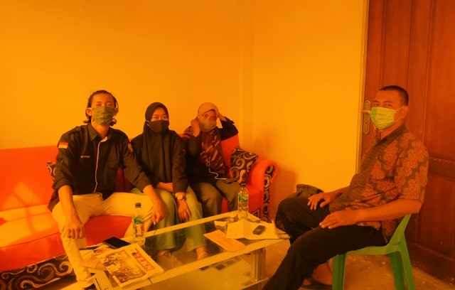

Tanggul dan Pintu Air, Infrastruktur yang dibutuhkan Masyarakat Sungai Ungar Utara
Tanjungbatu, Himpunan Mahasiswa Kundur (HIMK) Tanjungpiang-Bintan mengadakan kegiatan pengabdian masyarakat sebagai bagian dari agenda wajib latihan kepemimpinan (LK 2 Jilid 2) pada tanggal 14 s.d 18 Oktober 2020 yang dimana ini juga yang menjadi proses dalam pengembangan potensi diri serta momentum untuk membangun daerah. Dan pada kesempatan ini saya dan rekan rekan saya mendapatkan amanah untuk melakukan pengabdian masyarakat di daerah Dusun 4 Parit Wagio Desa Sungai Ungar Utara. Kami mengunjungi tempat itu selama 5 hari yang bertujuan untuk beradaptasi dengan masyarakat. Kami juga mengunjungi beberapa orang penting didaerah tersebut untuk meminta izin terlebih dahulu untuk melakukan pengabdian masyarakat tersebut dan dengan negoisasi yang baik kami diizinkan untuk melakukan pengabdian masyarakat disana. Untuk hari pertama, setibanya kami di lokasi tepatnya pada hari Rabu 14 Oktober 2020, kami mengunjungi rumah salah seorang warga disana yang kebetulan ia juga merupakan kelompok tani disana yaitu Pak Yono, kami juga menemui RT, RW, Pak Dusun, dan untuk bertemu dengan pak Kades kami lakukan pada keesokan harinya karena beliau sedang tidak memungkinkan untuk ditemui saat itu. Dan malam harinya kami melakukan diskusi ringan dengan beberapa tokoh masyarakat dirumah pak Yono untuk membahas hal hal yang ringan serta mendekatkan diri kepada tokoh masyarakat tersebut. Pada keesokannya, kami menjumpai RT, RW, Pak Dusun serta tokoh masyarakat yang lain untuk meminta izin melakukan silahturahmi dengan masyarakat desa setelah isya di Masjid yang ada di parit Wagio, dan tak lupa kami mengundang para tokoh tersebut namun disayangkan ada beberapa kendala yang membuat mereka terpaksa tidak bisa mengikuti agenda silahturahmi yang kami ingin lakukan. Dan setelah melakukan silahturahmi dengan masyarakat desa terdapat beberapa permasalahan yang kami Terima oleh masyarakat desa yang disampaikan oleh perwakilan pemuda disana yaitu Bang Paris ia mengatakan bahwa didaerah tersebut masih terdapat permasalahan seperti air bersih yang tidak mengalir dari sumur umum milik Pemda, kurangnya penerangan jalan, kondisi jalan yang masih masih di base, pengusulan pembuatan GAPOKTAN (GABUNGAN KELOMPOK TANI), serta tanggul air dan pintu air yang belum terealisasikan. Dan pada hari Jum'at 16 Oktober 2020, kami melakukan pertemuan dengan pak Kades Sungai Ungar Utara untuk membicarakan beberapa permasalahan yang sudah kami tampung sebelumnya untuk di klarifikasi langsung oleh pak Kades selain itu juga kami juga mengusulkan beberapa solusi dari air bersih yang tidak mengalir itu sebenarnya yang mengurusi tentang mesin air tersebut ialah pak Yono dari hasil diskusi kami dengan pak Yono mengatakan bahwa sebenarnya memang sengaja mematikan mesin tersebut dikarenakan menghindari permasalahan yang timbul seperti masyarakat desa tidak membantu membayar tagihan minyak mesin air yaitu Rp. 7.500,00,-/bln selain itu Masyarakat desa tidak tertib dalam mengambil air karena mereka mengacuhkan batas pengambilan air yang telah disepakati. Dari permasalahan ini kami mengusulkan kepada Pak Kades untuk membicarakan hal ini dengan masyarakat parit Wagio, selanjutnya permasalahan penerangan jalan yang sama sekali tidak ada didaerah tersebut kami mengusulkan kepada pak Kades untuk mengajak masyarakat melakukan kolektif memasangkan lampu rumah 10watt yang diletakkan di depan rumah masing-masing warga dan diarahkan ke jalan untuk mengurangi gelapnya jalan disana, lalu permasalahan gapoktan masyarakat disana meminta Pak Kades untuk bisa memberikan mereka pengertian tentang prosedur dari gapoktan tersebut dan hal ini akan segera dibicarakan dengan kelompok tani yang ada disana, untuk kondisi jalan hingga saat ini desa baru bisa memberikan pengerasan jalan sembari menunggu pihak kabupaten melakukan pengaspalan disana, lalu permasalahan tentang pintu dan tanggul air yang belum terealisasi hingga membuat air parit yang bercampur dengan air asin meluap hingga ke daerah perkebunan masyarakat dan hal ini menyebabkan menurunnya hasil panen hingga membunuh pepohonan karet disana. Keesokannya yaitu Sabtu, 17 Oktober 2020 kami hanya berbaur dengan masyarakat serta menemui pak Dusun guna menyampaikan pesan dari pak Kades agar bisa lebih menjadi pribadi yang terbuka lagi untuk kedepannya, di hari yang sama kami juga mengunjungi tokoh masyarakat desa dan akhirnya saya mewakili rekan rekan untuk berpartisipasi dalam konsolidasi yang dilakukan pak Kades untuk membahas perihal proyek pintu dan tanggul air. Konsolidasi yang dilakukan melibatkan tuan tanah, pengurus proyek, masyarakat setempat yang berprofesi sebagai petani dan nelayan beserta tokoh masyarakat lainnya, beberapa permasalahan proyek pembangunan tersebut sudah tinggal kurang lebih 2 bulan lagi dari November tahun lalu dan pembangunan tersebut sempat terhenti dan hingga sekarang dilanjutkan lagi. Dan solusi yang telah disepakati antara lain ialah masyarakat desa terkhusus pemuda langsung terjun berkontribusi dalam pembangunan tersebut, dan di wilayah pembangunan pintu air tersebut juga dibangun tempat untuk memparkirkan sampan sampan nelayan agar lebih rapi. Dari permasalahan yang kami dapati dapat disimpulkan bahwa permasalahan pintu dan tanggul air ialah permasalahan yang paling krusial dan harus segera direalisasikan mengingat bahwa besarnya harapan masyarakat besar terhadap proyek ini, dan harapannya proyek ini selain menjadi solusi infrastruktur ini juga bisa menjadi lowongan pekerjaan bagi pemuda setempat untuk mencari nafkah di masa pandemi ini.
Penulis: Arya Kusuma Bhakti